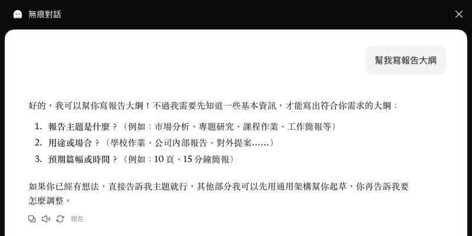
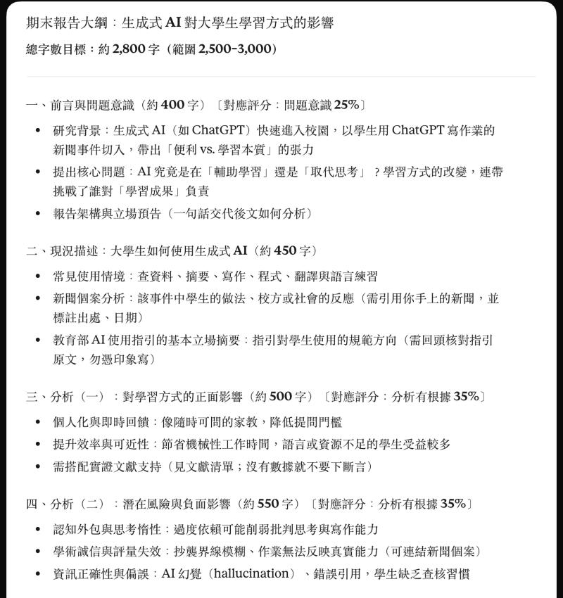
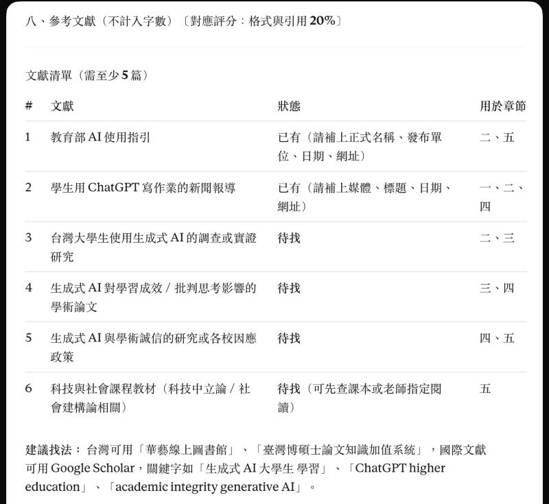
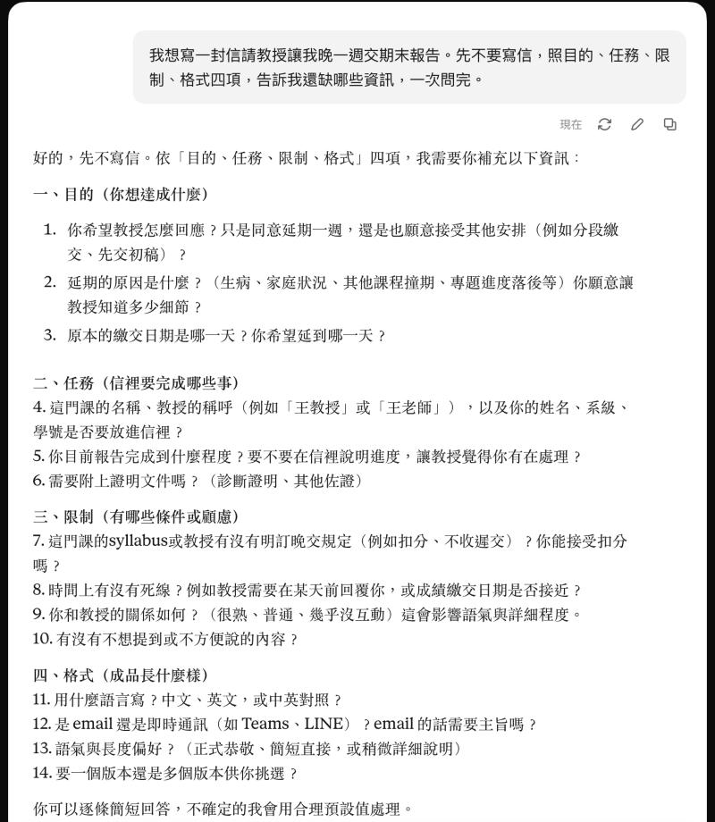

Prompt 四要素
給已經會開 Claude 聊天、但常覺得回答空泛或要重問好幾次的大學生和上班族。不用會寫程式，免費版就能做。
- 檢查一句模糊的需求，看出它缺了 MAPS（目的、任務、限制、格式）裡的哪幾項。
- 改寫同一個需求，用 MAPS 寫成完整的 Prompt，並比較改前改後的結果差在哪。
- 用「交給一位不認識你的新同事，他看得懂嗎？」檢查自己的 Prompt，補上缺的目的和背景資料。
- 存下改好的 Prompt，當作自己的第 1 個常用範本。
這課你會動手做
拿一件你這週真的要做的事，先用一句話問 Claude，再用 MAPS 重寫一次，兩次結果並排看。做完，你手上會有一份填好的 MAPS Prompt，存成你的第 1 個常用範本，下次換內容就能再用。
為什麼一句話不夠
同樣用 Claude，為什麼有人一次就拿到能交的東西？
差別多半在 Prompt（提示詞），也就是你打給 Claude 的那段話。這次任務的條件，Claude 只看得到你寫下來的字、你附上的檔案。你沒寫的，它只能猜。
現在的 Claude 很照字面做事。你寫「幫我寫報告大綱」，它手上就只有這幾個字：哪一門課、老師要什麼、要寫多長、你手上有什麼資料，它都不知道。這時它可能先反問你，可能猜錯，也可能自己補一些看起來合理、其實是編的內容。需求太模糊，回答就容易籠統，誰來問都差不多。開了記憶的帳號，它會參考你以前聊過的事，但這次老師要什麼，你不講它還是不知道。
把 Claude 想成第一天上班的新同事
Anthropic 官方的說法是：把 Claude 當成一位很聰明、但剛到職的新同事。他能力很強，可是不知道你的習慣、這份東西要給誰看、為什麼要做。你交辦時沒講的，他只能猜，猜錯的機會很高。
交辦給這樣一位新同事，你會講四件事。我們用四個英文字的開頭記成 MAPS：
MAPS：交辦時要講的四件事
這四件事就是這課的「Prompt 四要素」，記成 MAPS 就好：M 目的、A 任務、P 限制、S 格式。寫 Prompt 之前，用它檢查有沒有漏掉該講的事。
這段重點這次任務的條件，你沒寫它只能猜
MAPS
MAPS 四項：各寫什麼
四項裡A 任務最重要，一定要寫清楚要它做什麼、交出什麼；其他三項讓結果更貼近你要的。
M 目的 Mission：寫給誰、為什麼，附上手上的資料
「我是大學生」幫助不大。說清楚這份東西給誰、拿來做什麼、為什麼這樣要求，再附上你手上的資料，Claude 才抓得到重點。資料可以直接貼在 Prompt 裡，或用輸入框左邊的「＋」附上檔案。
- 學生：這是通識課的期末報告，老師說只整理資料、沒有自己觀點的，分析分數最多給一半。
- 上班族：這封信要給客戶的採購主管，他上次抱怨我們回覆太慢，所以語氣要先道歉再講方案。
A 任務 Ask：用動詞開頭，寫出要交什麼
只寫「報告大綱」，還沒說清楚要它做到什麼程度。改成「幫我寫報告大綱，交出條列式大綱，每一節寫 2–3 個要點和預計字數」，就看得出怎樣算做完。
- 學生：幫我把這三章講義整理成考前複習表，每章 5 個重點。
- 上班族：幫我擬一封回覆客戶的信，確認交貨日改到下週五。
P 限制 Parameters：範圍、字數，還有資料不夠時怎麼辦
寫出範圍、字數、一定要有的段落，以及不能出現的東西。另外加一句「資料不夠的地方標『待補』告訴我」，可以減少它自己編。字數寫在限制或格式都可以：四項是幫你檢查有沒有漏，不是考分類，有寫到就好。
- 學生：總字數 2,500–3,000 字；缺的文獻標「待找」，不要幫我編。
- 上班族：只講交期，不提價格；不確定的日期請標出來讓我確認。
S 格式 Shape：寫到你可以檢查
「寫得清楚一點」沒辦法檢查，「條列、每點一行、繁體中文、台灣用語、300 字內」可以。寫出條列或表格、語氣、長度、語言，收到結果時就能一項一項對。AI 寫的東西很空，常常就是因為目的和格式沒講：它不知道寫給誰、要交出什麼樣子，只好寫得四平八穩。
- 學生：用表格，三欄：章節、重點、我的熟悉度（第三欄留白，我自己填）。
- 上班族：信件格式，200 字內，語氣正式但不生硬，最後列出下一步。
這段重點A 任務最重要：用動詞開頭，寫出要交什麼
MAPS
MAPS 是用來檢查的，不必每次填滿
MAPS 是一張檢查表，不是要你每次都寫成四大段。依任務補上必要的資訊就好，不是越長越好。
問「APA 第 7 版的期刊文章怎麼引用」，一句話就夠了，Claude 不需要知道你的目的。要它幫你寫一份會被打分數、會寄給別人、會拿去做決定的東西，就值得把四項想一遍。
寫太多也有代價：細節堆太多，真正重要的條件反而被淹沒。每一句都問自己：少了這句，結果會不會不一樣？不會就刪掉。
寫的時候，也盡量寫「要做什麼」，少寫「不要做什麼」。「不要寫得太長」不如「300 字內」；「不要用太難的詞」不如「寫給沒修過這門課的大一新生看得懂」。說清楚要什麼，它比較容易做到。
MAPS 讓第一版更接近你要的，但不保證一次到位。拿到初稿之後怎麼追問、修改，是 2-3 那課的內容。
這段重點依任務補必要的資訊，不是越長越好
前後對照
同一個需求，兩種問法：期末報告大綱
我們用免費帳號、各開一個新對話，問同一件事。這次一句話版 Claude 先反問你；MAPS 版它直接交出照老師要求寫的大綱。
示範的課程與老師要求是虛構的。為了不讓帳號記憶影響結果，兩次都用「無痕對話」（右上角的幽靈圖示），所以截圖上方是黑色的。
一句話版：「幫我寫報告大綱」

遇到太模糊的需求，現在的 Claude 有時會先反問，有時會自己假設一個方向先寫。仔細看它問的：主題、這份報告用在哪、要多長，都是你還沒交代的目的、任務細節和限制。MAPS 做的事，就是把它會問你的，一開始一次講完，少掉一來一回。
MAPS 版：同一件事，講清楚
【目的】通識課「科技與社會」的期末報告，題目「生成式 AI 對大學生學習方式的影響」。評分：問題意識 25%、分析有根據 35%、個人反思 20%、格式與引用 20%。我手上有教育部的 AI 使用指引、一篇學生用 ChatGPT 寫作業的新聞。
【任務】幫我列報告大綱，每節 2–3 個要點、標預計字數。
【限制】報告總字數 2,500–3,000 字；文獻至少 5 篇，缺的標「待找」，不要編。
【格式】條列，繁體中文。
一項一行、短句就好，打起來大約一分鐘。不用寫成文章，重點是四項都有講到。
用【】標出四項是為了讓你看清楚，自己寫的時候不一定要加。
這段重點MAPS＝把它會問你的事，一開始一次講完
前後對照
MAPS 版拿到什麼：照評分寫、排進你手上的資料
比的不是誰比較長，而是有沒有照老師的要求、有沒有把你手上的資料排進去。


兩次結果差在哪
| 一句話版 | MAPS 版 | |
|---|---|---|
| 拿到大綱了嗎 | 還沒，先反問三件事 | 直接交出完整大綱 |
| 有照老師的評分嗎 | 它不知道評分 | 大部分章節標出對應哪個評分項目 |
| 排進你的資料嗎 | 它不知道你有資料 | 你提到的兩篇文章排進對應的章節 |
| 文獻怎麼處理 | — | 缺的標「待找」，不編 |
這次只說了手上有哪兩篇，沒有貼內容，所以它是依文章類型安排位置，並沒有讀過文章。要它照文章內容寫，就把文章貼上或附檔。它列出的資料庫和網站，也要自己點進去確認找得到。寫得再好，Claude 也可能出錯，事實和出處要自己查；怎麼查證是主題 3 的內容。
這段重點比結果有沒有符合要求，不是比誰寫得長
自我檢查
送出之前，用這三招檢查
三招的前提是你自己先想清楚要什麼。你沒辦法講給一個人聽懂的事，也寫不成好的 Prompt。
一、新同事測試
假裝把這段 Prompt 交給一位不認識你的新同事，他看完就能開始做嗎？還是會跑回來問你「這是哪一門課」「要給誰看」「要多長」？他會問的，就是你還沒寫的目的、限制或格式。這是 Anthropic 官方建議的檢查法。
二、先寫草稿，請 Claude 幫你找缺漏
不確定缺什麼，可以先讓 Claude 問你。下面這句，把「我想……」換成你的事就能用：
我想寫一封信請教授讓我晚一週交期末報告。先不要寫信，照目的、任務、限制、格式四項，告訴我還缺哪些資訊，一次問完。

三、MAPS 各看一眼
- M 目的：寫了給誰、為什麼，附上手上的資料
- A 任務：用動詞開頭，寫出要交什麼、怎樣算做完
- P 限制：寫了範圍、長度，資料不夠時要它標「待補」
- S 格式：寫到收到結果時可以一項一項對
這段重點先讓不熟悉這件事的人也看得懂
兩種寫法
兩種寫 Prompt 的方式：MAPS 和角色工程
這兩種沒有新舊之分，兩種都能用。一次性的事，MAPS 就夠；會一再重做的事，值得進一步用角色工程。
MAPS：把這一次的需求講清楚
就是這課教的。適合這週的報告大綱、這一封信、這一份簡報這類做一次就結束的事。每次要用，把四項想一遍、補上必要的資訊。
角色工程：把 AI 當新進員工來帶
這是創業顧問 Dan Martell 在 YouTube 上分享的做法，他把這份東西叫 Master Prompt：給 AI 一份長期用的工作說明書。不是只交辦一件事，而是像帶新進員工一樣，給它一個固定的職位：
- 它的職責是什麼
- 做到什麼程度算合格，寫成可以驗收的完成標準
- 它需要的背景資料
- 一份滿分範例
- 每次做錯的地方，寫成下次要遵守的規則
寫出來大概長這樣，以攝影社每週的 IG 貼文為例（指定角色、給範例的細節在下一課 2-2）：
【職責】你是攝影社的社群小編，每週把我給的社課內容寫成一篇 IG 貼文。
【完成標準】150 字內；第一句寫這週學什麼；最後一句寫時間地點；結尾 3 個 hashtag。
【背景】社員多半是大一新生；社課每週三晚上 7 點，在學生活動中心 204。
【滿分範例】（貼上你最滿意的一篇）
【規則】不用「超讚」「必看」這類字；日期一律寫成「11/26（三）」。之後哪裡做錯，就在這裡加一條。
之後每週只要說「這週社課：人像打光」，它就照這份說明書寫。跟 MAPS 比，它是長期用的，另外放了滿分範例，還會一條條累積修正的規則。這種寫法適合每週都要寫的社群貼文、每次開完會都要整理的紀錄這類一再重做的事。這些設定要存在 Claude 記得住的地方，之後會在 4-1 個人化指令、4-3 Project、4-4 Skills 這幾課教。
MAPS 不是唯一的公式
MAPS 是這課整理的記法，不是官方唯一的寫法。Google 的指南用「角色、任務、背景、格式」四項；Anthropic 的官方說明則建議清楚交代指令和背景，並視需要加入範例、指定格式。不論哪一種，都在講同一件事：把需求講清楚。指定角色和給範例，留到下一課 2-2。
這段重點一次性的事 MAPS 就夠，重複的事再用角色工程
動手做
換成你自己的事，存成第 1 個範本
挑一件你這週真的要做的事：一份作業、一封信、一份簡報都可以。先用一句話問一次，再用 MAPS 重寫一次，兩次結果並排看。
- 開一個新對話，用一句話把這件事丟給 Claude（開了記憶的人，可以用右上角的「無痕對話」，比較公平）。看它直接做了，還是先反問你；反問的話，記下它問了什麼。
- 再開一個新對話，用下面的範本把四項填好送出。
- 把兩次的結果並排看，照「前後對照」那張表的四列比：拿到成品了嗎、有照要求嗎、用上你的資料嗎、缺的資料怎麼處理？
- 結果還差一點，可以直接在對話裡追問（2-3 那課會教）；同時把缺的那一項補進範本，下次一開始就寫進去。
- 把填好的範本存起來，例如手機的備忘錄或你的筆記軟體，取一個好找的名字，例如「報告大綱」。下次同類的事複製出來，先換掉題目、日期、資料這些每次不同的地方，再送出。
【目的】這是要給＿＿＿＿的，為了＿＿＿＿。我手上有＿＿＿＿。
【任務】幫我＿＿＿＿，交出＿＿＿＿。
【限制】範圍是＿＿＿＿，長度＿＿＿＿；只用我給的資料，不夠的地方標「待補」並告訴我。
【格式】用＿＿＿＿（條列、表格或段落），語氣＿＿＿＿；用繁體中文、台灣用語。
這份就是你的第 1 個常用範本。「Prompt 技巧」這個主題學完，你會累積 5 個自己常用的範本。
這段重點填好的 MAPS，就是你的第 1 個範本
常見問題
常見問題
做到這三件，就學會了
- 拿一句模糊的需求，說得出它缺了 MAPS 的哪幾項
- 用 MAPS 重寫過一次自己的需求，比較過兩次結果
- 存好第 1 個常用的 MAPS 範本
考考你
第 1 題：「幫我寫一份攝影社的招生文宣。對象是大一新生，社課在每週三晚上。用 3 個條列重點、語氣輕鬆。」社費和報名期限你都還沒給。想避免 Claude 自己編出社費和報名期限，最該加哪一句？
- 語氣再活潑一點
- 對象是剛入學、還沒參加社團的大一新生
- 社費和報名期限我還沒定，請標「待補」，不要自己寫數字
- 改成 5 個條列重點
第 2 題：你只打「幫我寫報告大綱」，Claude 先反問主題、用途、篇幅。最好的做法是？
- 換一個 AI 工具再問一次
- 回答它問的事，下次一開始就把這些寫進 Prompt
- 叫它不要問，直接寫
- 在同一句話後面多加幾個形容詞，例如「詳細、專業」
第 3 題：下週你要拿上次存的「報告大綱」範本，寫另一門課的報告。送出前最該先做什麼？
- 直接送出，範本已經寫好了
- 換掉題目、課名、日期、資料和這次老師的要求
- 把範本再加長一倍，寫得越細越好
- 刪掉【限制】那段，讓它自由發揮
練習給它範例、指定角色，讓輸出更接近你要的格式。
用 MAPS 寫一次，存成你的第 1 個範本。
想看官方說明
- Prompting best practices｜platform.claude.com/docs/en/build-with-claude/prompt-engineering/claude-prompting-best-practices
- Best practices for prompt engineering｜claude.com/resources/articles/best-practices-for-prompt-engineering
示範畫面是 2026 年 11 月 21 日用 Claude 免費方案（網頁版、中文介面、Sonnet 5.5）實測。同樣的 Prompt，每次的回答不會一字不差，但結構差不多。
這段重點卡住就回來翻這頁